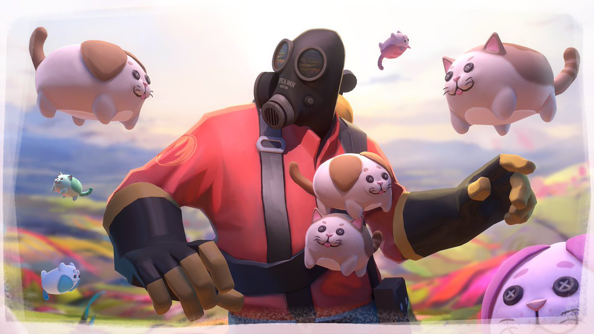

Креативність - ключ до мрії
Креативність — це можливість створювати нове з нічого; побачити можливість і зуміти її розвинути.Неможливо просто прочитати книгу чи прослухати лекцію, щоб стати креативним. Формування навички потребує відповідного тренування. Ось способи, які допоможуть розвинути креативність за умови регулярної практики.
Гнучкість мислення — це можливість дивитись на звичні речі під новим кутом зору. З роками це вдається все складніше, але саме ця навичка важлива для креативності.
Перевірити, наскільки гнучким є ваше мислення, можна просто зараз — за допомогою тесту Струпа.
До найбільш відомих мнемотехнік належать:
- Заведіть блокнот для шалених ідей;
- Вивчайте нове: місця, культури, дисципліни;
- Шукайте нові способи вирішення щоденних завдань;
- Постійно ставте собі питання: «Що вийде, якщо…», «А чому саме так?»;
- Дозвольте собі творити й помилятися;
- Звільніть час для інновацій.;
- Спробуйте вигадати спосіб розвитку креативності самостійно :3;
креативність — це питання вибору і звички. Чим більше ви будете вправлятися й шукати незвичне у стандартному, тим більш гнучким буде ваше мислення. І тоді до вас із більшою ймовірністю прийде нова нестандартна ідея.